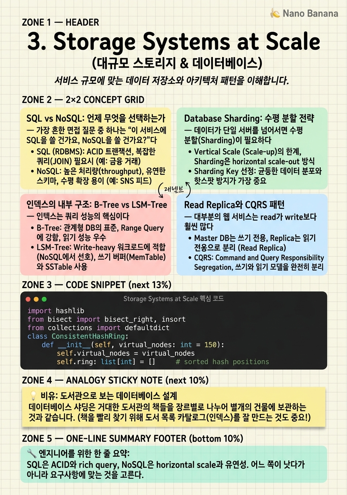

Storage Systems at Scale

🎯 학습 목표
- SQL과 NoSQL의 트레이드오프를 구체적 시나리오에 적용할 수 있다
- Horizontal Sharding의 3가지 전략과 각각의 장단점을 설명할 수 있다
- B-Tree와 LSM-Tree 인덱스 구조의 차이와 적합한 사용 사례를 안다
- Read Replica와 Master-Slave 구성의 한계와 failover 방법을 설명할 수 있다
- Google Spanner/CockroachDB 같은 NewSQL이 왜 생겼는지 설명할 수 있다
데이터베이스는 모든 시스템의 심장이다. 잘못된 데이터베이스 선택이나 설계는 나머지 아키텍처를 아무리 잘해도 극복하기 어려운 병목을 만든다. 시스템 설계 면접에서 "왜 MySQL이 아닌 Cassandra를?" "왜 DynamoDB가 좋은 선택인가?"를 정확히 답할 수 있어야 한다.
SQL은 20년 넘게 검증된 ACID 트랜잭션과 rich query를 제공한다. NoSQL은 SQL의 확장성 한계를 극복하기 위해 다양한 형태로 발전했다. 하지만 핵심은 어느 쪽이 더 좋은가가 아니라 이 요구사항에 무엇이 맞는가다.
샤딩은 단일 데이터베이스가 더 이상 감당할 수 없는 데이터를 여러 서버에 분산하는 기술이다. 개념은 단순하지만 실제 구현에는 데이터 분산, 쿼리 라우팅, 리밸런싱 같은 복잡한 문제가 따른다. 이 챕터에서 이 모든 것을 체계적으로 정리한다.
핵심 내용
SQL vs NoSQL: 언제 무엇을 선택하는가
가장 흔한 면접 질문 중 하나는 "이 서비스에 SQL을 쓸 건가요, NoSQL을 쓸 건가요?"다. 잘못된 답은 "NoSQL이 더 빠르니까 NoSQL"이다.
SQL (관계형 데이터베이스)이 맞는 경우:
- 데이터 간의 관계가 복잡하고 JOIN이 필요한 경우 (주문, 사용자, 상품이 연결되는 e-커머스) - ACID 트랜잭션이 필수인 경우 (금융 거래, 재고 관리) - 데이터 스키마가 안정적이고 변경이 적은 경우 - Rich query가 필요한 경우 (임의의 조건 조합 검색)
NoSQL이 맞는 경우:
- 스키마가 유동적이거나 nested structure가 많은 경우 (사용자 프로필, 이벤트 로그) - 수평 확장이 반드시 필요한 경우 (단일 노드로 감당 안 되는 규모) - Write throughput이 매우 높은 경우 (IoT 센서 데이터, 클릭스트림) - Key-based access pattern이 명확한 경우
NoSQL의 유형은 크게 네 가지다:
| 유형 | 대표 제품 | 사용 사례 | |---|---|---| | Document | MongoDB, Firestore | 사용자 프로필, 제품 카탈로그 | | Key-Value | Redis, DynamoDB | 세션, 캐시, 리더보드 | | Wide-Column | Cassandra, HBase | 시계열, 클릭스트림, IoT | | Graph | Neo4j, Amazon Neptune | 소셜 그래프, 추천, 사기 탐지 |
빅테크에서는 사실 다중 데이터베이스 전략을 쓴다. 메인 데이터는 MySQL/PostgreSQL, 캐시는 Redis, 검색은 Elasticsearch, 이벤트 로그는 Cassandra처럼 각 역할에 맞는 DB를 조합한다.
Database Sharding: 수평 분할 전략
데이터가 단일 서버를 넘어서면 수평 분할(Sharding)이 필요하다. 각 샤드는 전체 데이터의 부분 집합을 담당하는 독립 데이터베이스다.
Horizontal Sharding 전략 3가지:
1. Range-based Sharding
Key의 범위에 따라 샤드를 배정한다. user_id 1~100만은 Shard 1, 100만~200만은 Shard 2.
- 장점: Range query 효율적 ("이번 달 가입 사용자 전체") - 단점: Hotspot 발생 위험. 최신 데이터가 항상 마지막 샤드에 몰린다.
2. Hash-based Sharding
shard_id = hash(key) % num_shards 로 배정한다.
- 장점: 균일한 데이터 분산 - 단점: Range query 불가. 샤드 추가 시 대규모 데이터 이동 필요 (리밸런싱 문제)
3. Consistent Hashing
Hash space를 링(ring) 형태로 배치하고 각 샤드가 링의 일부를 담당한다. 샤드 추가/제거 시 영향받는 데이터가 최소화된다.
- 장점: 샤드 추가/제거 시 전체 데이터의 \(K/N\) 만 이동 (K = key 수, N = 샤드 수) - 단점: 균일 분산이 보장되지 않음. 가상 노드(Virtual Node)로 보완.
샤딩의 단점:
- 여러 샤드에 걸친 JOIN, transaction이 어렵다 - 샤드 간 데이터 불균형(Hot Shard) 문제 - 운영 복잡도 증가 - Application layer에서 샤딩 로직을 관리해야 함
따라서 샤딩은 마지막 수단으로 생각해야 한다. 먼저 Vertical Scaling, Read Replica, Caching을 최대한 활용한 후 샤딩을 고려한다.
인덱스의 내부 구조: B-Tree vs LSM-Tree
인덱스는 쿼리 성능의 핵심이다. 그런데 왜 MySQL(InnoDB)은 B-Tree를 쓰고, Cassandra는 LSM-Tree를 쓰는가? 내부 구조의 차이가 시스템의 특성을 결정한다.
B-Tree (Balanced Search Tree)
MySSQL, PostgreSQL, SQLite의 기본 인덱스 구조. 데이터를 정렬된 트리로 유지하며 모든 잎 노드(leaf node)는 실제 데이터를 가리킨다.
- 읽기: \(O(\log n)\) 탐색. Range query에 효율적.
- 쓰기: 삽입 시 트리 재균형이 필요. Random write → HDD에서 느리다.
- Read-heavy workload에 최적.
LSM-Tree (Log-Structured Merge-Tree)
Cassandra, RocksDB, LevelDB의 기본 인덱스 구조. 쓰기를 먼저 in-memory 구조(Memtable)에 저장, 일정 크기가 되면 정렬된 파일(SSTable)로 디스크에 flush.
- 쓰기: Sequential write → 매우 빠름 (HDD에서도 빠름).
- 읽기: 여러 SSTable을 병합하여 읽어야 해서 B-Tree보다 느릴 수 있음. Bloom filter로 보완.
- Write-heavy workload에 최적.
| 구조 | Read | Write | 사용 사례 | |---|---|---|---| | B-Tree | 빠름 | 중간 | OLTP, 범용 | | LSM-Tree | 느림 | 매우 빠름 | 로그, IoT, Write-heavy |
면접에서 "Cassandra는 왜 write가 빠른가?"라는 질문에 LSM-Tree의 sequential write 덕분이라고 답할 수 있어야 한다.
Read Replica와 CQRS 패턴
대부분의 웹 서비스는 read가 write보다 훨씬 많다. Read Replica는 이 특성을 활용해 읽기 부하를 분산하는 가장 간단하고 효과적인 방법이다.
Read Replica 구성:
Primary(Write) → [비동기 복제] → Replica 1, Replica 2, Replica 3
모든 쓰기는 Primary로, 모든 읽기는 Replica로 라우팅한다. MySQL, PostgreSQL, RDS 모두 지원한다.
주의사항:
- Replication lag: 쓰기 직후 같은 데이터를 읽으면 old data를 볼 수 있다.
- "Read your own writes" 문제: 자신이 방금 쓴 데이터를 읽으려면 Primary에서 읽거나, session-based consistency를 구현해야 한다.
CQRS (Command Query Responsibility Segregation)
Read Replica의 논리적 확장. 쓰기(Command)와 읽기(Query)를 완전히 다른 데이터 모델로 분리한다.
- Command Side: 정규화된 스키마, ACID 트랜잭션 (PostgreSQL) - Query Side: 비정규화된 읽기 최적화 스키마 (Elasticsearch, Redis, Read Replica)
이벤트 소싱(Event Sourcing)과 자주 결합된다. 쓰기 시 이벤트를 발행하고, 읽기 모델은 이벤트를 구독하여 최적화된 뷰를 업데이트한다.
💡 비유로 이해하기
데이터베이스는 거대한 도서관이다. SQL은 분류 체계가 완벽하게 정비된 국립도서관과 같다. 모든 책이 규칙에 따라 분류되어 있고, 어떤 조합의 검색도 정확하게 답을 줄 수 있다. 하지만 새 도서관을 지으려면(스케일 업) 엄청난 비용이 든다.
NoSQL은 목적에 최적화된 특수 도서관들이다. Key-Value는 보관함만 있는 짐 보관소 (빠른 put/get), Document DB는 파일 캐비닛 (유연한 구조), Wide-Column은 스프레드시트 (시계열 데이터), Graph DB는 마인드맵 (관계 중심).
샤딩은 도서관을 여러 건물로 나누는 것이다. 'A~M'은 1관, 'N~Z'는 2관처럼 나누면 각 관이 작아져 빠르다. 하지만 'A로 시작하는 책 중 N을 쓴 작가의 책'을 찾으려면 두 관을 다 뒤져야 한다. 이것이 샤딩에서 cross-shard query가 비싼 이유다.
💻 코드 예시
Consistent Hashing을 Python으로 구현한다. 이것은 샤드 추가 시 최소 데이터만 이동시키는 핵심 알고리즘으로, Redis Cluster, Amazon DynamoDB, Apache Cassandra에서 사용된다.
import hashlib
from bisect import bisect_right, insort
from collections import defaultdict
class ConsistentHashRing:
def __init__(self, virtual_nodes: int = 150):
self.virtual_nodes = virtual_nodes
self.ring: list[int] = [] # sorted hash positions
self.hash_to_node: dict[int, str] = {}
self.node_keys: dict[str, list[int]] = defaultdict(list)
def _hash(self, key: str) -> int:
return int(hashlib.md5(key.encode()).hexdigest(), 16)
def add_node(self, node: str):
for i in range(self.virtual_nodes):
vh = self._hash(f"{node}#{i}")
insort(self.ring, vh)
self.hash_to_node[vh] = node
self.node_keys[node].append(vh)
print(f"Added node '{node}' with {self.virtual_nodes} virtual nodes")
def remove_node(self, node: str):
for vh in self.node_keys.pop(node, []):
self.ring.remove(vh)
del self.hash_to_node[vh]
print(f"Removed node '{node}'")
def get_node(self, key: str) -> str:
if not self.ring:
raise Exception("No nodes in ring")
h = self._hash(key)
# Find first position >= h (wrap around to 0 if needed)
idx = bisect_right(self.ring, h) % len(self.ring)
return self.hash_to_node[self.ring[idx]]
# Demo: adding a new shard disrupts minimal data
ring = ConsistentHashRing(virtual_nodes=100)
ring.add_node("shard-1")
ring.add_node("shard-2")
ring.add_node("shard-3")
# Before adding shard-4
keys = [f"user:{i}" for i in range(1000)]
before = {k: ring.get_node(k) for k in keys}
ring.add_node("shard-4") # Add new shard
after = {k: ring.get_node(k) for k in keys}
moved = sum(1 for k in keys if before[k] != after[k])
print(f"Keys remapped: {moved}/1000 ({moved/10:.1f}%)") # ~25%, not 100%핵심은 마지막 출력이다. 샤드를 3개에서 4개로 늘렸을 때 이상적으로는 25%의 키만 이동해야 한다. Consistent Hashing 없이 단순 hash modulo를 쓰면 hash(key) % 3 → hash(key) % 4로 변경 시 75% 이상의 키가 다른 샤드로 이동한다. Virtual node 수를 늘릴수록 분산이 균일해진다.
🏭 현업에서의 평가
✅ 시니어가 보는 것
- 데이터 모델과 access pattern에 맞는 DB를 선택하는가
- 샤딩 없이 스케일 가능한 방법(캐시, Read Replica)을 먼저 고려하는가
- Sharding key 선택의 이유를 설명할 수 있는가
- DB 장애 시 failover 전략이 있는가
⚠️ 레드 플래그
- "NoSQL은 빠르니까" 같은 근거 없는 선택
- Sharding key가 hotspot을 만드는 설계 (예: 타임스탬프를 sharding key로 사용)
- 단일 DB에 모든 데이터를 넣는 monolithic 설계
- 인덱스 없이 full-table scan으로 쿼리하는 설계
🎤 예상 인터뷰 질문
- Instagram의 사진 메타데이터 저장소를 설계한다면 어떤 DB를 쓰고 어떻게 샤딩하겠어?
- Sharding key를 user_id로 선택했을 때의 장단점은?
- Read Replica에서 읽을 때 발생할 수 있는 문제와 해결 방법은?
✨ 핵심 요약
SQL vs NoSQL = 트레이드오프
SQL은 ACID와 rich query, NoSQL은 horizontal scale과 유연성. 어느 쪽이 낫다가 아니라 요구사항에 맞는 것을 고른다.
샤딩은 마지막 수단
Vertical scaling → Read Replica → Caching → 마지막으로 샤딩. 샤딩은 complexity 대가가 크다.
Consistent Hashing이 핵심
Hash modulo 대신 Consistent Hashing을 쓰면 샤드 추가 시 ~K/N 데이터만 이동한다.
Sharding Key가 운명
잘못된 sharding key는 hotspot을 만들어 모든 스케일링 효과를 없앤다. 접근 패턴을 먼저 분석하라.
B-Tree vs LSM-Tree
Read-heavy는 B-Tree(MySQL), Write-heavy는 LSM-Tree(Cassandra, RocksDB).
Read Replica는 공짜 점심
가장 간단한 read 스케일링 방법. Replication lag를 인지하고 설계하라.
다중 DB 전략
빅테크는 하나의 DB가 아니라 역할에 맞는 여러 DB를 조합한다. MySQL + Redis + Elasticsearch + Cassandra.
인덱스는 항상 write 비용
인덱스는 read를 빠르게 하지만 write overhead가 있다. 모든 컬럼에 인덱스를 걸면 write가 느려진다.